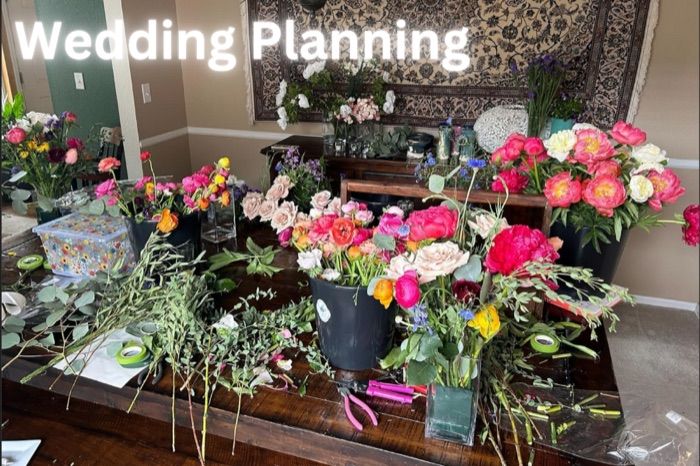
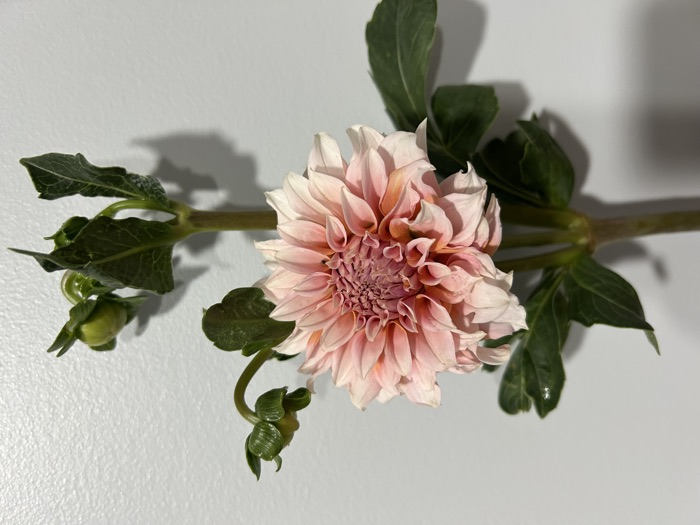

Every bloom on this page was grown right here on our Colorado Springs farm — no greenhouses, no shortcuts, just sun, soil, and a lot of love. Take a look at what's been growing, season to season.
Fresh from the Field



Fresh-cut blooms harvested straight from the field, ready to become bouquets for weddings, proms, and everyday joy.
Seasonal Color



Our color palette rotates throughout the growing season — whatever's thriving on the farm finds its way into our arrangements.
Life on the Farm


A look at life on the farm, from finished arrangements to the fields where every bouquet starts.